Aubreya Adams noticed some problems in the inversion of a Rayleigh wave dispeersion data set. The resultant models were very different. This response is an attempt to define and understand the problems.
A spherical velocity model was reformatted into the CPS330 model96 format. In addition this model was then converted into am earth-flattened velocity model. There is no problem with this since the program surf96 must convert a spehrical model to a flat model internally for computation.
The models tested are as follow:
The issue raised requires a number of test to focus on the earth flattening that Aubreya used, the ability of surf96 to use spherical models, and of course the final inversion results.
I compiled the sphfla.f, copied the start_cvlrad.vmod to sph.mod and then ran sphfla to create a flat.mod. I then compared the flattened models:
gfortran sphfla.f -o sphfla
cp start_cvlrad.vmod sph.mod
sphfla
shwmod96 -ZMAX 500 -VMIN 3 -VMAX 7 -LEGIN -K -1 flat.mod start_cvl.vmod
plotnps -BGFILL -F7 -W10 -EPS -K < SHWMOD96.PLT > t.eps
convert t.eps flat_compare.png #ImageMagick not part of CPS
to get the following figure:
|
I created two sub-directories: FLATTENED_MOD and SPH_MOD. These had the following files:
The control file sobs.d is
4.99999989E-03 4.99999989E-03 0.0000000 5.00000007E-02 0.0000000
1 0 0 0 0 1 0 0 1 0
start_cvl.vmod
disp.cvl
The control file sobs.d is
4.99999989E-03 4.99999989E-03 0.0000000 4.99999989E-03 0.0000000
1 0 0 0 0 1 0 0 1 0
start_cvlrad.vmod
disp.cvl
I then ran the following script in each of the directories (Note the last line naming the PNG file is changed)
#!/bin/sh ##### # clean up ##### surf96 39 ##### # calculate the prediction of the initial # velocity model ##### surf96 1 ##### # plot - since I want an actual graphic and since # the command surf96 7 calls srfvph which calls # srfphv96 -V, I do this manually ##### srfphv96 -V plotnps -F7 -W10 -EPS -K -BGFILL < SRFPHV96.PLT > t.eps convert -trim t.eps FLAT_1.png
|
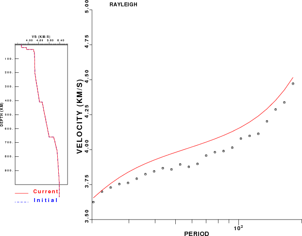 |

|
Focusing on the predicted dispersion, we see that they are equivalent. The earth flattening was done correctly. There may be a difference in the density since surf96 applies a different density mapping to the Love and Rayleigh waves in going from a spherical to an internal flat model.
The next step is to run ten iterations of the inversion to obtain the inverted models.
|
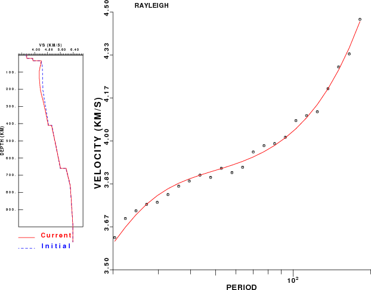 |
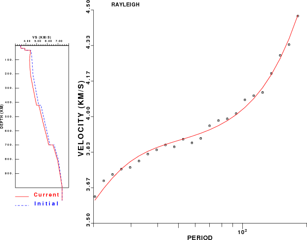 |
This comparison is information in that the new mdoels (red) fit the dispersion between 20 and 200 sec equally well, if not identically. We see that the use of the initial flattened model has changed in velocity to 670 km, while the use of the initial spherical model only has changes in velocity down to the 440 discontinuity.
In both cases the inversion leads to lower upper mantle velocities than the initial model.
As a check, I used the FLAT_3.mod and SPH_3.mod derived after 10 iterations to predict dispersion. The final models worked well.
In order to really compare the two models, it is necessary that they be of the same type. So I again use the program sphfla to flatten the SPH_3.mod. I then compare the flattened SPH_3.mod to the FLAT_3.mod and to the original start_cvl.vmod.
| 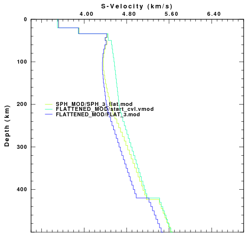 |
In this figure the SPH_MOD/SPH_3_flat.mod and the FLATTENED_MOD/FLAT_3.mod both fit the observed dispersion. We see that they agree to a depth of about 140 km.
To learn what part of the dispersion if affected by these differences, I added some fake dispersion points at periods of 231, 281 and 331 seconds. I did not invert this new data set, but rather used the same trick shown above to get the predictions. The result is shown in the next figure:
| 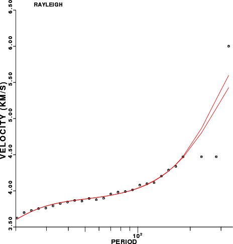 |
We see that the differences at depth only affect the dispersion at very long periods.
After seeing the significant difference in the final models, I then looked at the changes in the model at each step. Basically the first iteration led to similar velocity changes in both models, but the next iteration showed different changes for the two models.
In the figures that follow, the spehrical will be on the left and the flattend on the right. First we will compare the model changes for each iteration.
To make the plots, I run the script
#!/bin/sh
# look at initial partials
# put in fkae group velocities
RUN="SPH"
cat > sobs.d << EOF
4.99999989E-03 4.99999989E-03 0.0000000 4.99999989E-03 0.0000000
1 0 0 0 0 1 1 0 1 0
start_cvlrad.vmod
disp.cvl
EOF
#####
# clean up
#####
surf96 39
#####
# set of 10 iterations of the inversion
#####
surf96 1 2
# initial
srfphv96 -V
plotnps -F7 -W10 -EPS -K -BGFILL < SRFPHV96.PLT > t.eps
convert -trim t.eps ${RUN}_6_0.png
surf96 6 1 2
# model 1
srfphv96 -V
plotnps -F7 -W10 -EPS -K -BGFILL < SRFPHV96.PLT > t.eps
convert -trim t.eps ${RUN}_6_1.png
surf96 6 1 2
# model 2
srfphv96 -V
plotnps -F7 -W10 -EPS -K -BGFILL < SRFPHV96.PLT > t.eps
convert -trim t.eps ${RUN}_6_2.png
surf96 6 1 2
# model 3
srfphv96 -V
plotnps -F7 -W10 -EPS -K -BGFILL < SRFPHV96.PLT > t.eps
convert -trim t.eps ${RUN}_6_3.png
shwmod96 -ZMAX 500 -VMIN 3 -VMAX 7 -K -1 -LEGIN tmpmod96.???
plotnps -F7 -W10 -EPS -K -BGFILL < SHWMOD96.PLT > t.eps
convert -trim t.eps ${RUN}_6_mod.png
|
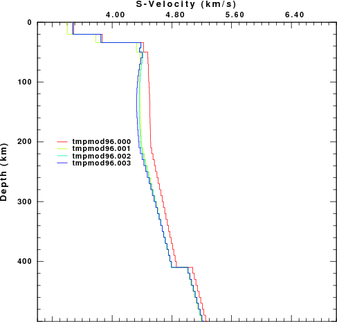 |
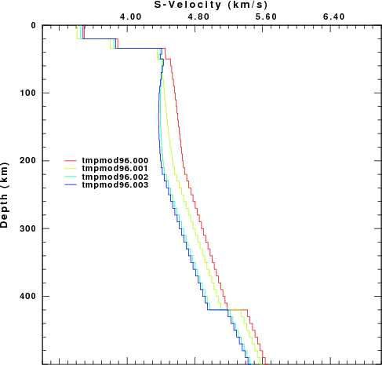 |
We see that the change in velocity between the initial model, tmpmod96.000 and the result of the first iteration, tmpmod96.001, is about the same. However for the next iteration, the FLAT_MOD exhibits a much larger change than the SPH_MOD, which seems to have converged.
To further investigate this, the script also produced the fit to the dispersion. My expectation, is that each iteration will better fit the data.
|
|
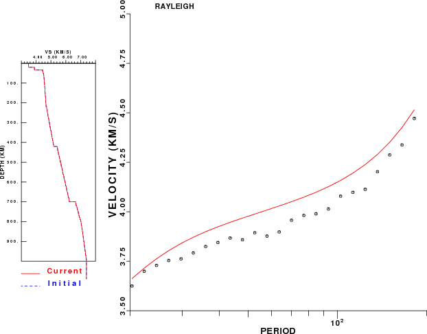 |
|
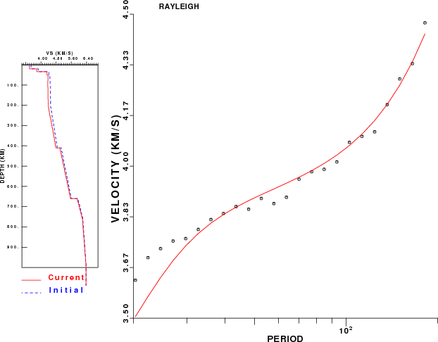 |
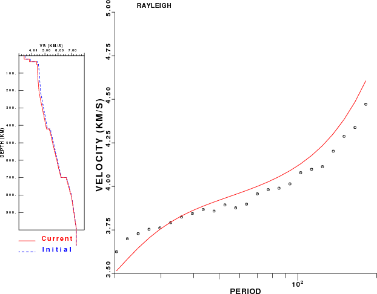 |
|
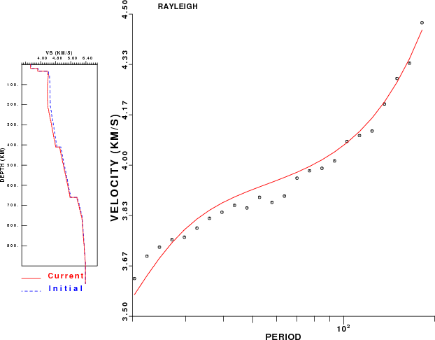 |
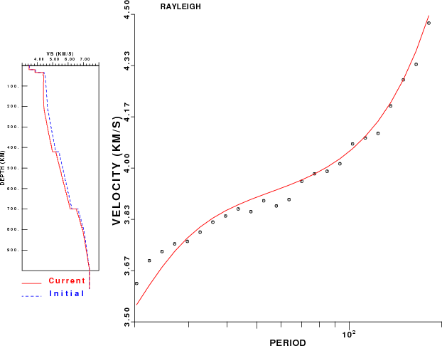 |
|
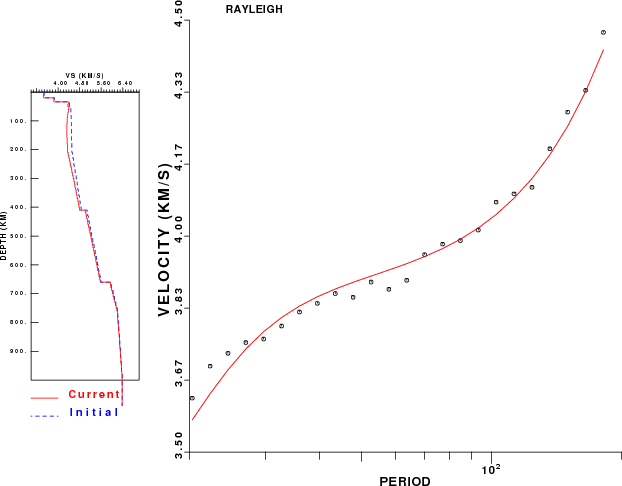 |
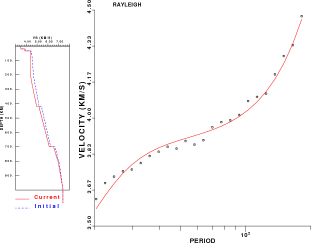 |
This is what I see in the plots:
So what happended that the prediction of the first iteration model are worse for the FLAT_MOD. I verified that tha change is S-velocity is similar. (surf96 1 2 18 ). Then I noticed that there was a big change in the density at depth. Just run the following shell command
for i in tmpmod96.00? do echo '-----' $i '-----' tail -60 $i | head -5 done
to give
---- tmpmod96.000 -----
10.0000 9.5545 5.1571 3.0602 321. 143. 0.270 0.270 1.00 1.00
10.0000 9.6059 5.1826 3.0542 321. 143. 0.270 0.270 1.00 1.00
10.0000 10.0090 5.4220 3.2281 321. 143. 0.270 0.270 1.00 1.00
10.0000 10.0590 5.4519 3.2264 321. 143. 0.270 0.270 1.00 1.00
10.0000 10.1090 5.4818 3.2247 321. 143. 0.270 0.270 1.00 1.00
----- tmpmod96.001 -----
10.0000 9.4141 5.0813 3.8807 0.312E-02 0.699E-02 0.00 0.00 1.00 1.00
10.0000 9.4688 5.1086 3.9002 0.312E-02 0.699E-02 0.00 0.00 1.00 1.00
10.0000 9.8758 5.3498 4.0527 0.312E-02 0.699E-02 0.00 0.00 1.00 1.00
10.0000 9.9290 5.3815 4.0677 0.312E-02 0.699E-02 0.00 0.00 1.00 1.00
10.0000 9.9822 5.4131 4.0827 0.312E-02 0.699E-02 0.00 0.00 1.00 1.00
----- tmpmod96.002 -----
10.0000 9.1621 4.9453 3.8256 0.312E-02 0.699E-02 0.00 0.00 1.00 1.00
10.0000 9.2187 4.9737 3.8475 0.312E-02 0.699E-02 0.00 0.00 1.00 1.00
10.0000 9.6290 5.2161 4.0028 0.312E-02 0.699E-02 0.00 0.00 1.00 1.00
10.0000 9.6849 5.2492 4.0230 0.312E-02 0.699E-02 0.00 0.00 1.00 1.00
10.0000 9.7408 5.2822 4.0432 0.312E-02 0.699E-02 0.00 0.00 1.00 1.00
----- tmpmod96.003 -----
10.0000 9.1181 4.9215 3.7248 0.312E-02 0.699E-02 0.00 0.00 1.00 1.00
10.0000 9.1750 4.9501 3.7475 0.312E-02 0.699E-02 0.00 0.00 1.00 1.00
10.0000 9.5859 5.1928 3.9090 0.312E-02 0.699E-02 0.00 0.00 1.00 1.00
10.0000 9.6423 5.2261 3.9303 0.312E-02 0.699E-02 0.00 0.00 1.00 1.00
10.0000 9.6987 5.2594 3.9515 0.312E-02 0.699E-02 0.00 0.00 1.00 1.00
Near the surface, I get
H(KM) VP(KM/S) VS(KM/S) RHO(GM/CC) QP QS ETAP ETAS FREFP FREFS
20.0000 5.8000 3.4955 2.6000 189. 84.0 0.270 0.270 1.00 1.00
14.0000 6.5000 3.8900 3.3810 189. 84.0 0.270 0.270 1.00 1.00
9.0000 8.0412 4.4500 3.3785 167. 74.0 0.270 0.270 1.00 1.00
7.0000 8.0412 4.4550 3.3785 157. 69.0 0.270 0.270 1.00 1.00
----- tmpmod96.001 -----
H(KM) VP(KM/S) VS(KM/S) RHO(GM/CC) QP QS ETAP ETAS FREFP FREFS
20.0000 5.6550 3.4081 2.6600 0.529E-02 0.119E-01 0.00 0.00 1.00 1.00
14.0000 6.3516 3.8012 2.8500 0.529E-02 0.119E-01 0.00 0.00 1.00 1.00
9.0000 7.8739 4.3574 3.3248 0.599E-02 0.135E-01 0.00 0.00 1.00 1.00
7.0000 7.8653 4.3576 3.3248 0.637E-02 0.145E-01 0.00 0.00 1.00 1.00
----- tmpmod96.002 -----
H(KM) VP(KM/S) VS(KM/S) RHO(GM/CC) QP QS ETAP ETAS FREFP FREFS
20.0000 5.7307 3.4537 2.6310 0.529E-02 0.119E-01 0.00 0.00 1.00 1.00
14.0000 6.4217 3.8431 2.8055 0.529E-02 0.119E-01 0.00 0.00 1.00 1.00
9.0000 7.9332 4.3902 3.2671 0.599E-02 0.135E-01 0.00 0.00 1.00 1.00
7.0000 7.9048 4.3795 3.2642 0.637E-02 0.145E-01 0.00 0.00 1.00 1.00
----- tmpmod96.003 -----
H(KM) VP(KM/S) VS(KM/S) RHO(GM/CC) QP QS ETAP ETAS FREFP FREFS
20.0000 5.7736 3.4795 2.6461 0.529E-02 0.119E-01 0.00 0.00 1.00 1.00
14.0000 6.4614 3.8669 2.8265 0.529E-02 0.119E-01 0.00 0.00 1.00 1.00
9.0000 7.9671 4.4089 3.2873 0.599E-02 0.135E-01 0.00 0.00 1.00 1.00
7.0000 7.9281 4.3924 3.2776 0.637E-02 0.145E-01 0.00 0.00 1.00 1.00
We see that there was an increase in the density at depth as a result of the first iteration. The partial derivative of Rayeigh wave phase velocity with density is negative at the surface, zero at some depth on the order of the period, and then positive at deeper depths. Thus the net effect will be that the increase of density at depth will increase the velocity and that the S-wave velocity must decrease in order to counteract that effect. This big difference in density only occurs after the first iteration.
So how is density handled?
The inversion program determines the change in S-wave velocity. A new S-wave velocity is then created. The P-wave velocity is derived using the inital Vp/Vs ratio (P can be fixed in the inversion). Finally the density is estimated from the P-wave velocity.
For initial spherical models, the earth model is flattened. Then a change in the flat-earth S-velocity is determined. This is then mapped back into the proper spherical velocity. The spherical S-wave velocity is updated, then the P-velocity and then the density. These are actual Earth velocities and the Nafe-Drake (?) mapping of P-velocity to density is appropriate.
For the flattened model, the S-velocity was changed, the P-velocity updated, and then this P-velocity was used to give the density for this flattened earth, which will typically increase with depth. On the other hand the flattening requires the density to decrease with depth. We cannot compute the dispersion for the spherical earth using flattening unless the density decreases with depth. This is where the process went astray.
Although flattening a model independendly of surf96 can lead to the correct dispersion, this model should not be iterated on.